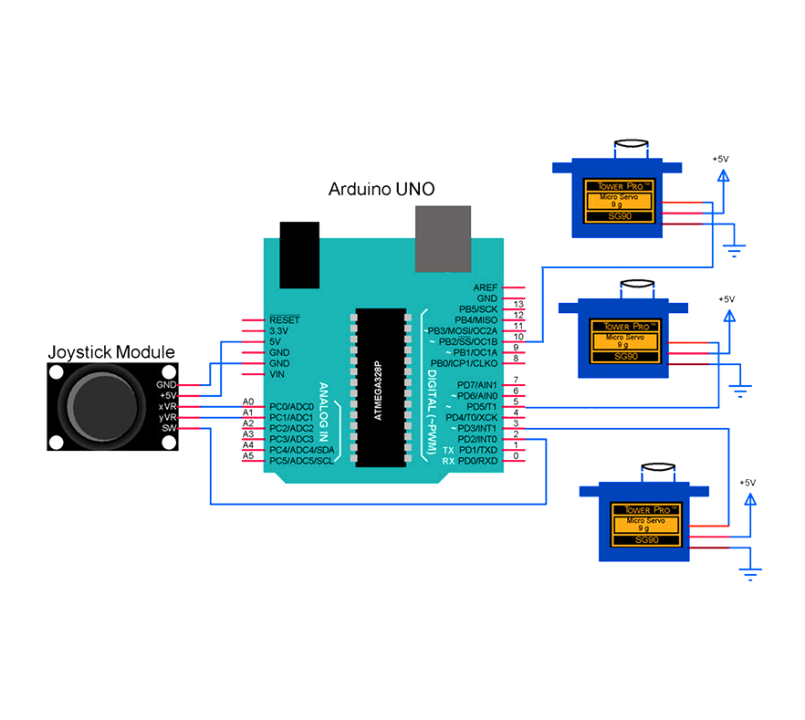

To control pitch, Servo 2 pulls the wires while Servo 3 feeds them, both running at the same speed according to the joystick input. Pushing the joystick left moves the joint one way; pushing it right moves it the opposite way.
For yaw, a modulo routine drives Servo 1 in a four-step cycle:
Servo 3